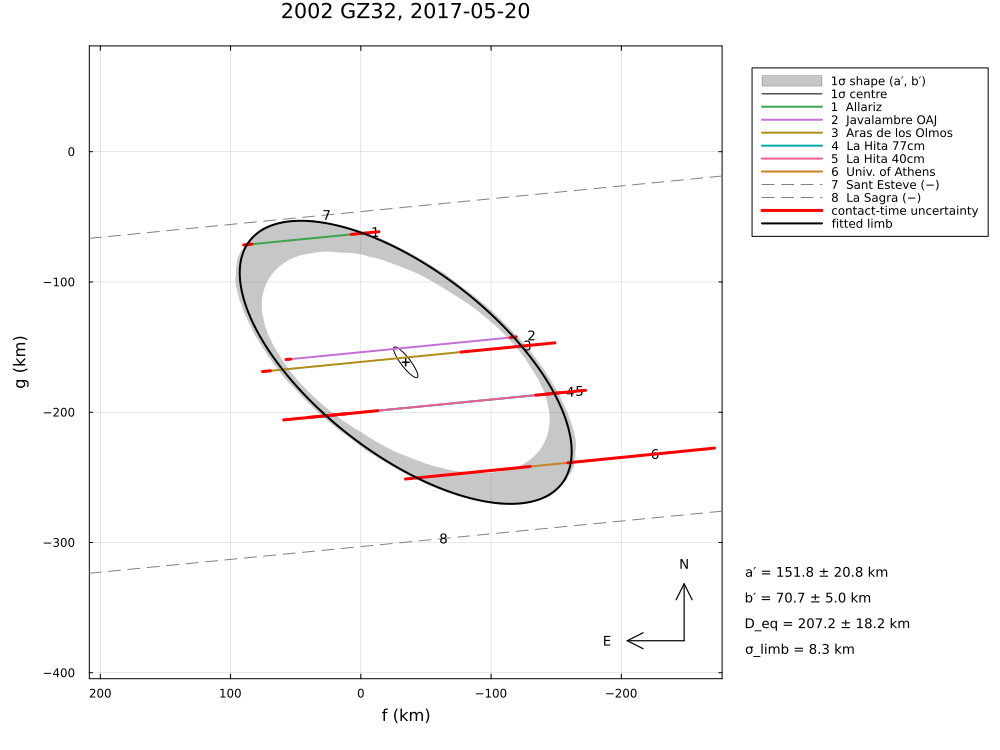
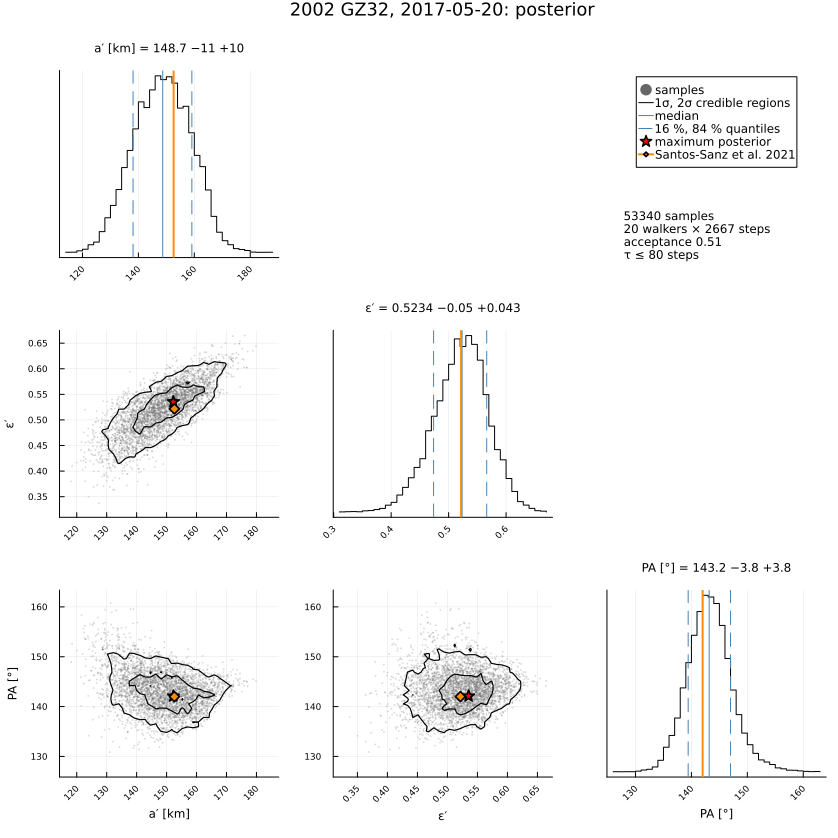

2002 GZ32, 2017 May 20
The stellar occultation by the centaur (95626) 2002 GZ32 on 2017 May 20, reduced from the published timings of Santos-Sanz et al. (2021), MNRAS 501, 6062, "The 2017 May 20 stellar occultation by the elongated centaur (95626) 2002 GZ32": five chords used for the limb (four in Spain, one in Greece), a sixth one with an unknown time offset, and two close negative chords.
The example covers:
- the limb with the timing errors only, the paper's two configurations (original chords; chord centres aligned on a line, the Athens chord with its large errors moving most) as fits with clock offsets, and the limb allowance σ_limb;
- the very elongated limb (a′/b′ ≈ 2) and the negative chord at Sant Esteve, which touches it;
- the posterior, the area-equivalent diameter and the geometric albedo.
The data are transcribed in examples/data/2002gz32_20170520.jl, with the stored JPL Horizons ephemeris, so the script runs offline:
julia --project=. examples/2002gz32_2017.jl [output_dir] (default: examples/output/2002gz32_2017)The code is not run when the manual is built. The output after each section is that of the last run of examples/2002gz32_2017.jl, stored in examples/output/2002gz32_2017/output.txt.
using Occultations, Random, Printf, Statistics
using Plots
import CairoMakie # saves the GeoMakie maps (Makie figures)
include(joinpath(@__DIR__, "standard_figures.jl"))
include(joinpath(@__DIR__, "data", "2002gz32_20170520.jl"))
out = length(ARGS) >= 1 ? ARGS[1] : mkpath(joinpath(@__DIR__, "output", "2002gz32_2017"))
rng = MersenneTwister(2017)
P = GZ32_PAPER
q(x) = quantile(x, [0.15865525393145707, 0.5, 0.8413447460685429])
pm(x) = (v = q(x); @sprintf("%.1f −%.1f +%.1f", v[2], v[2] - v[1], v[3] - v[2]))
row(label, r) = @printf("%-42s a′ = %5.1f ± %4.1f b′ = %4.1f ± %3.1f PA = %5.1f ± %3.1f D_eq = %5.1f ± %4.1f χ² = %6.2f\n",
label, r[:equatorial_radius]..., r[:semi_minor_axis]..., mod(r[:position_angle][1], 360),
r[:position_angle][2], 2r[:equivalent_radius][1], 2r[:equivalent_radius][2], r.chi2)
prow(label, x) = @printf("%-42s a′ = %5.1f ± %4.1f b′ = %4.1f ± %3.1f PA = %5.1f ± %3.1f D_eq = %5.1f ± %4.1f χ² = %6.2f\n",
label, x.a..., x.b..., x.position_angle..., x.D_eq..., x.chi2)Event and geometry (paper values in parentheses)
ev = gz32_event()
D = ev.ca.dist_km
@printf("%d positive chords (%d used) and %d negative; distance %.4f au (%.4f), shadow velocity %.2f km/s (%.2f)\n",
count(ispositive, ev.chords), count(c -> ispositive(c) && all(x -> x.use, c.contacts), ev.chords),
count(isnegative, ev.chords), D / 1.495978707e8, P.distance_au, ev.ca.vel, P.velocity)
@printf("stellar diameter %.2f km (0.59), Fresnel scale %.2f km at 0.6 µm (%.2f)\n", apparent_diameter(ev.star, D),
fresnel_scale(0.6, D), P.fresnel_km)6 positive chords (5 used) and 2 negative; distance 17.1033 au (17.1033), shadow velocity 20.95 km/s (21.19)
stellar diameter 0.59 km (0.59), Fresnel scale 0.88 km at 0.6 µm (0.88)Limb fits
The paper's position angle P′ (of the minor axis, 318° and 322°) is the same orientation as P′ − 180°; the fits here report it in [0°, 360°) as found.
prow("published, original chords (radial)", P.original)
prow("published, chords aligned (radial)", P.shifted)
r0 = fit_limb(ev; residual=:radial, rng=rng)
row("radial residuals, timing errors only", r0)
rc = fit_limb(ev; rng=rng)
row("along the chords, timing errors only", rc)The paper aligns the chord centres; the counterpart here is a clock offset for every chord with a prior N(0, 0.5 s) (NTP-synchronised computers, Sect. 3):
names = [c.name for c in ev.chords if ispositive(c) && all(x -> x.use, c.contacts)]
priors = Dict(Symbol("dt_", n) => (0.0, 0.5) for n in names)
rt = fit_limb(ev; fit_dt=names, priors=priors, rng=rng)
row("clock offsets, priors N(0, 0.5 s)", rt)
println(" fitted offsets [s] (the paper's shifts in parentheses):")
for (k, v) in sort(collect(clock_offsets(rt)))
@printf(" %-18s %+6.2f ± %.2f (%+.3f)\n", k, v..., P.shifts[k])
end
rs = fit_limb(ev; σ_limb=:auto, rng=rng)
row(@sprintf("along the chords, σ_limb = %.1f km", rs.problem.σ_limb), rs)published, original chords (radial) a′ = 146.0 ± 12.0 b′ = 73.0 ± 4.6 PA = 318.0 ± 3.0 D_eq = 206.0 ± 15.0 χ² = 29.50
published, chords aligned (radial) a′ = 152.6 ± 8.4 b′ = 73.0 ± 4.2 PA = 322.0 ± 3.0 D_eq = 211.0 ± 12.0 χ² = 4.00
radial residuals, timing errors only a′ = 184.3 ± 24.8 b′ = 40.4 ± 1.9 PA = 163.7 ± 1.0 D_eq = 172.5 ± 8.4 χ² = 41.62
along the chords, timing errors only a′ = 163.7 ± 22.9 b′ = 71.1 ± 4.1 PA = 139.1 ± 4.7 D_eq = 215.7 ± 20.6 χ² = 42.90
clock offsets, priors N(0, 0.5 s) a′ = 160.7 ± 29.7 b′ = 67.9 ± 5.9 PA = 140.1 ± 6.1 D_eq = 208.9 ± 25.3 χ² = 4.08
fitted offsets [s] (the paper's shifts in parentheses):
Allariz +0.16 ± 0.47 (+0.013)
Aras de los Olmos -0.68 ± 0.31 (-0.771)
Javalambre OAJ +0.29 ± 0.28 (+0.006)
La Hita 77cm +0.06 ± 0.41 (-0.258)
Univ. of Athens +0.17 ± 0.48 (+2.048)
along the chords, σ_limb = 8.3 km a′ = 151.8 ± 20.8 b′ = 70.7 ± 5.0 PA = 142.1 ± 6.1 D_eq = 207.2 ± 18.2 χ² = 5.00Negative chords
for x in check_negative_chords(rs)
@printf(" %-12s %s, %5.1f km from the limb\n", x.chord, x.conflict ? "CROSSES THE LIMB" : "consistent", x.distance)
end
println("(the negative chord at Sant Esteve passes just outside the north-eastern end of the limb; as a hard")
println(" constraint it bounds the major axis)") Sant Esteve consistent, 2.5 km from the limb
La Sagra consistent, 25.0 km from the limb
(the negative chord at Sant Esteve passes just outside the north-eastern end of the limb; as a hard
constraint it bounds the major axis)Posterior, diameter and albedo
post = sample(rs; nsteps=4000, rng=rng)
display(post)
d = derived_samples(post; n=4000, rng=rng)
Deq = 2 .* d.equivalent_radiusthe occultation saw the body close to its brightness minimum: H = H_V + Δm/2 (Sect. 4.1)
pV = [(1329 / D_ * 10^(-(P.H_V[1] + P.amplitude / 2 + P.H_V[2] * randn(rng)) / 5))^2 for D_ in Deq]
@printf("area-equivalent diameter %s km (published %.0f ± %.0f), geometric albedo %.3f ± %.3f (%.3f ± %.3f)\n",
pm(Deq), P.shifted.D_eq..., median(pV), std(pV), P.shifted.albedo...)
ε = samples(post)[:, findfirst(==(:oblateness), post.names)]
@printf("axis ratio a′/b′ = %s (published 2.09 ± 0.24)\n", pm(1 ./ (1 .- abs.(ε))))Posterior of LimbProblem: 20 walkers × 4000 steps (burn-in 1333), acceptance 0.51
center_f = -33.479284 -7.226338 +7.034921
center_g = -161.172521 -8.344525 +8.568991
equatorial_radius = 148.705127 -10.619390 +10.420870
oblateness = 0.523414 -0.049558 +0.042875
position_angle = 143.171430 -3.752117 +3.815448
area-equivalent diameter 205.2 −9.5 +8.6 km (published 211 ± 12), geometric albedo 0.044 ± 0.005 (0.043 ± 0.007)
axis ratio a′/b′ = 2.1 −0.2 +0.2 (published 2.09 ± 0.24)Astrometry
a = astrometry(rs)
@printf("RA %s Dec %s at %s UTC (σ %.2f, %.2f mas); offset from JPL Horizons Δα cos δ = %+.2f, Δδ = %+.2f mas\n",
a.ra_str, a.dec_str, isot(a.epoch; digits=1), a.ra_err, a.dec_err, a.offset_ra, a.offset_dec)
println("(the paper's centre, (−500, −112) km, refers to the older JPL#23 orbit)")RA 16 50 08.54048 Dec -13 05 12.3289 at 2017-05-20T01:30:27.4 UTC (σ 1.03, 1.33 mas); offset from JPL Horizons Δα cos δ = -2.78, Δδ = -13.03 mas
(the paper's centre, (−500, −112) km, refers to the older JPL#23 orbit)Figures
savefig(plot(ev; title="2002 GZ32, 2017-05-20: chords", size=(1000, 750)), joinpath(out, "2002gz32_chords.png"))
savefig(cornerplot(post; vars=[:equatorial_radius, :oblateness, :position_angle],
axislabels=Dict(:equatorial_radius => "a′ [km]", :oblateness => "ε′", :position_angle => "PA [°]"),
truths=Dict(:equatorial_radius => P.shifted.a[1], :oblateness => 1 - P.shifted.b[1] / P.shifted.a[1],
:position_angle => P.shifted.position_angle[1] - 180), truth_label="Santos-Sanz et al. 2021"),
joinpath(out, "2002gz32_corner.png"))
# the standard figures: limb fits (default, 68.3 % region, as the paper), posterior, maps (prediction,
# post-fit, comparison) and the globe
standard_figures("2002gz32", rs; out=out, posterior=post, paper=(fit=rt, uncertainty=:pointwise, nsigma=1),
projection="+proj=laea +lon_0=6 +lat_0=40", limits=(-12, 28, 32, 48), window=600, marks=60)
println("figures written to ", out)The limb along the chords with σ_limb, and its posterior:

